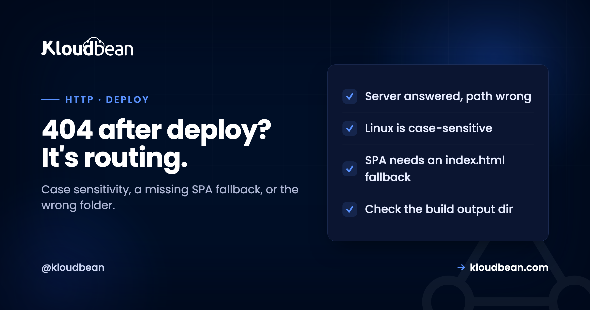

404 Not Found: Why It Appears After Deploy, and How to Fix It

Everyone knows a 404 means "not found." The interesting 404s are the ones that make no sense: the page that works perfectly on your machine and returns 404 the moment you deploy, or the app route that loads fine until someone refreshes it. Those are not really about a missing page. They are about the gap between how files and routes resolve on your laptop and how they resolve on a Linux server. This guide is mostly about that gap, because that is where the confusing 404s live.
Three causes cover most of it. First, case sensitivity: Linux servers treat About.js and about.js as different files, while macOS and Windows usually don't, so a wrong-case path works locally and 404s in production. Second, single-page-app routing: the server needs a fallback so deep links like /dashboard serve index.html instead of looking for a file that isn't there. Third, the build output or base path is wrong, so the server is looking in the wrong folder. A 404 means the server was reachable and answered, so the problem is where it's looking, not whether it's up.
What a 404 actually rules out
Start with what the code tells you, because it eliminates more than it says.
A 404 is defined in the HTTP spec as the server being reachable and understanding your request, but not finding a matching resource. That negative information is useful: your DNS resolved, the server is up, the connection succeeded, and something answered. This is not a server that's down (that's a 502 or 503) and not a name that won't resolve (that's a DNS error). The machine is there and talking. So a 404 narrows the problem to one thing: the server looked for what you asked for and didn't find it where it expected. The entire investigation is therefore about the path, what you requested versus what actually exists on the server and how it maps requests to files or routes. Once you frame it that way, "the page is missing" becomes "the server is looking in the wrong place, or under the wrong name," which is a far more findable problem.
Case sensitivity: the Linux surprise that gets everyone
If your 404 appeared the instant you deployed, check this first. It is the most common cause and the least obvious.
macOS and Windows filesystems are usually case-insensitive: Header.css, header.css, and HEADER.CSS all point to the same file. Linux, which almost every server runs, is case-sensitive: those are three different files. So a link, import, or asset path with the wrong case works flawlessly on your Mac and returns a 404 the moment it runs on the server, because the file it names does not exist there, only a differently-cased version does. This catches an enormous number of people, precisely because it cannot reproduce locally. If /assets/Logo.png 404s in production but the file is committed as logo.png, that mismatch is your bug. The fix is to make the reference match the actual filename exactly, and then to stop relying on your local filesystem to paper over case mistakes. This is the same root cause behind a lot of "cannot find module" failures too, which the cannot-find-module guide covers from the import side. Commit filenames in a consistent case and reference them exactly, and a whole category of production-only 404s disappears.
Worth saying plainly: no host fixes this one. Kloudbean runs Linux, every other serious platform runs Linux, and case sensitivity is the filesystem doing exactly what it's supposed to. The correction lives in your repository, not in anyone's server config.
Single-page apps: the 404 on refresh
If your app loads at the home page but 404s when you refresh a deep link, this is your cause, and it's a configuration one-liner.
A single-page app (React, Vue, Angular, and friends) does its own routing in the browser. When you navigate to /dashboard by clicking inside the app, JavaScript handles it and no server request happens. But when you refresh that URL or paste it fresh, the browser asks the server for /dashboard, the server looks for a file or folder called dashboard, finds nothing, and returns 404. The app never got a chance to route. The fix is to tell the server to fall back to index.html for any path it doesn't recognise, so the app always loads and then handles the route itself. On Nginx that's a try_files $uri $uri/ /index.html; directive; most static hosts have an equivalent "rewrite everything to index.html" setting. This is not a bug in your app, it's a server that doesn't yet know your app owns its own routing. Configure the fallback and deep links start working on refresh.
Whether you write that line yourself depends on who owns the web server. On Kloudbean the reverse proxy in front of your app arrives configured for the stack you deployed, so a React or Vue app serves index.html for unknown paths without you touching an Nginx file. On a bare VPS it's yours to add, and it's the line people forget, because everything works right up until the first refresh.
The rest of the deploy checklist
If it's neither case nor SPA routing, work down this short list, which covers almost everything else.
- Wrong build output directory. The server is serving a different folder than the one your build produces (serving the project root instead of
distorbuild, for example). Point it at the actual output directory. On Kloudbean that's a field in the application's deployment settings, so it's visible next to the build command instead of buried in a server config you edit over SSH. - A base path or subdirectory mismatch. If the app is served from a subfolder but built for the root (or the reverse), every asset path is off by that prefix. Set the base path to match where it's actually hosted.
- Missing rewrite rules for clean URLs. Frameworks that expect a front controller (many PHP apps) need a rewrite so requests route through
index.php; without it, every pretty URL 404s. CodeIgniter is the classic case, and a CodeIgniter 404 on every route but the homepage is almost always this. - A trailing-slash or index-file assumption. The server may expect
index.htmlin a directory, or may redirect/pageto/page/differently than you assume; a mismatch shows up as a 404.
Each of these is the same underlying story as the rest of the article: the request and what exists on the server don't line up, and the fix is making them line up rather than adding a page.
Check it in this order, and stop at the first hit
Every cause above has a signature. Read the signature and you skip straight to the answer instead of changing things at random. Go top to bottom, because the earlier steps are cheaper and rule out more.
- Does it 404 in production but load locally? Compare the exact case of every path segment and filename against what's committed. First, because it's the most common and the only one you can't reproduce on your machine.
- Does the home page load and only deep links 404? That's the single-page-app fallback, and nothing else behaves that way. One directive, or one platform setting.
- Does every route except
/404? Missing front-controller rewrite. The router never ran, so the filesystem answered instead. - Do pages load but assets 404? Base path or build output directory. Open the network tab and read the URL it actually requested; the wrong prefix is usually obvious.
- Did it start 404ing after a build change? Look at what the build emitted, then at the directory being served. Those two drifting apart is the whole bug.
Steps 2 through 5 are all server wiring, which is the half of this list that changes depending on who runs your web server. Deploy from Git onto Kloudbean and the proxy, the rewrite and the served directory are set up for the stack you picked, so those four rarely come up. Run your own VPS and all four are yours, forever, on every new app.
Step 1 belongs to you either way, and it's the one people waste the most hours on. A wrong-case reference or an asset your build never produced will 404 identically on managed hosting, on a bare server, and on any CDN, because the file genuinely isn't there. For the front-end specifics see deploy a static site, and for the broader version of this question, why my app works locally but not in production.
More on 404 Not Found
The production-only version of this is explored in why my app works locally but not in production, and the import-side of case sensitivity is in fixing cannot find module. For deploying front ends, deploy a static site and deploy a Next.js app. A neighbouring status code with a similar "the server answered" logic is 405 method not allowed.
Deploys that tell you what broke.
Deploy from Git, watch the build output as it runs, and open the app error log when a process refuses to start. Managed processes restart on crash, and backups are automatic.
- ✓ Live build logs
- ✓ Deployment history
- ✓ Logs viewer
- ✓ Managed process restarts
- ✓ Automatic backups
- ✓ Git deploy
FAQ
What does a 404 not found error mean?
It means the server was reachable and understood the request but could not find a resource matching the URL. Importantly, that tells you the server is up and answering, so the problem is not a down server (which gives a 502 or 503) or a DNS failure. A 404 narrows the issue to the path: the server looked for what you asked for and did not find it where it expected, so the fix is about where it is looking, not whether it is running.
Why does my page work locally but return 404 in production?
The most common reason is case sensitivity. macOS and Windows filesystems usually ignore case, but Linux servers do not, so a path with the wrong case works on your machine and 404s in production because the exact filename does not exist there. Other frequent causes are a single-page-app route with no server fallback, a wrong build output directory, or a base-path mismatch. All of them are the request and the server disagreeing about where a file is.
How do I fix a 404 on refresh in a React or Vue app?
Configure the server to fall back to index.html for any path it does not recognise, so the app always loads and then handles routing in the browser. On Nginx this is a try_files directive ending in /index.html; most static hosts have a rewrite-to-index setting. The 404 happens because refreshing a deep link asks the server for that path directly, and without the fallback the server looks for a file that does not exist. The fallback hands routing back to your app.
Why does case sensitivity cause 404s on a server?
Because Linux treats filenames as case-sensitive, so Logo.png and logo.png are two different files, while your Mac or Windows machine treats them as the same. A reference with the wrong case finds the file locally but not on the Linux server, producing a production-only 404 that you cannot reproduce in development. The fix is to make every link, import, and asset path match the actual filename's case exactly, and to keep filename casing consistent in your repository.
Is a 404 bad for SEO?
A genuine 404 for a page that truly does not exist is normal and fine; search engines expect them. The problems are a 404 on a page that should exist (which means real content is unreachable) and a soft 404, where a page returns a 200 status but shows "not found" content, which confuses crawlers. Return a real 404 status for missing pages, fix 404s on URLs that should work, and avoid serving not-found content with a success status.
What is the difference between 404 and 410?
A 404 means the resource is not found, with no statement about whether it ever existed or might come back. A 410 Gone is a deliberate, stronger signal that the resource existed and has been intentionally removed permanently. Use 410 when you have retired a URL on purpose and want to tell clients and search engines it is not coming back; use 404 for the general not-found case where the absence may be temporary or unintended.
How do I fix a 404 for clean URLs in a PHP app?
Many PHP applications route all requests through a front controller like index.php and rely on a server rewrite rule to do it. Without that rewrite, requesting a pretty URL makes the server look for a matching file or folder, find nothing, and return 404. The fix is to add the rewrite (an .htaccess rule on Apache, or a location block on Nginx) that sends requests through index.php, so the framework's router handles the URL instead of the filesystem.
Does managed hosting prevent deploy-time 404s?
It prevents the ones caused by hand-configuring the web server. On a managed platform like Kloudbean the server is set up for your stack, so single-page-app fallbacks and front-controller rewrites are handled rather than left to a config file you might get wrong. It cannot fix a link pointing at a wrong-case filename or an asset your build never generated, because those are in your code, but it removes the whole category of 404s that come from server misconfiguration.